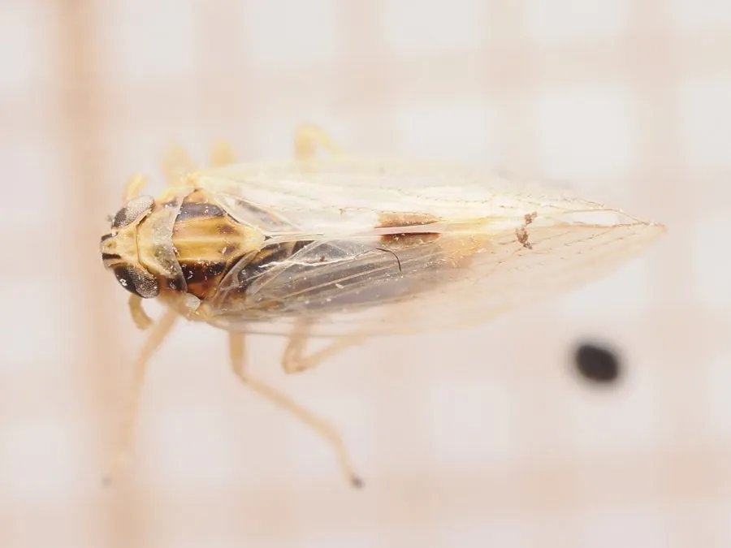

昆虫 · 动物界
灰飞虱 Laodelphax striatellus

体灰褐的小型飞虱，在稻茬与麦田之间转移，传播水稻条纹叶枯病和小麦丛矮病，是稻麦轮作区的关键害虫。
- 分类
- 门节肢动物门纲昆虫纲目半翅目科飞虱科属灰飞虱属
- 栖息环境
- 水稻田、麦田、禾本科杂草丛和稻茬田
- 地理分布
- 中国南北各地，以及日本、朝鲜半岛和欧洲
- 保护级别
- 尚无保护级别；为稻麦轮作区的重要传病害虫
物种志
灰飞虱的体长约三点五至四毫米，体形细长，体色灰褐至黄褐，头顶略突出，前胸背板上有淡色的纵纹，中胸小盾片中央有一条浅色带。它的翅透明，长翅型个体的翅超过腹部，短翅型则较短。若虫体色灰褐，翅芽随龄期增长而显现，善跳跃，受惊时迅速蹦开。
它分布于中国南北各地，以及日本、朝鲜半岛和欧洲，栖息在水稻田、麦田、禾本科杂草丛和稻茬田，一年发生多代，以若虫在稻茬、麦田和杂草中越冬。它是稻麦轮作区的重要害虫，春季从麦田迁入稻田，秋季又从稻田迁回麦田，成虫和若虫刺吸汁液，造成植株黄化，更严重的是传播水稻条纹叶枯病和小麦丛矮病，病株条纹斑驳、矮化丛生。它尚无保护级别，防治以清除田边杂草、调整播期和药剂拌种为主，控制越冬虫源是关键。
形态与习性
- 体长约三点五至四毫米，体形细长
- 体色灰褐至黄褐，前胸背板有淡色纵纹
- 越冬以若虫在稻茬、麦田和杂草中越冬
- 转移春季由麦田迁入稻田，秋季迁回
- 传病传播水稻条纹叶枯病与小麦丛矮病
- 防治清除田边杂草、调整播期、药剂拌种
趣味知识
- 它在麦田过冬，春天一暖就搬到稻田，秋天再搬回去。
- 条纹叶枯病的病株叶上有一条条褪绿条纹，罪魁就是它。
- 清掉田边杂草，等于拆了它越冬和转移的落脚点。